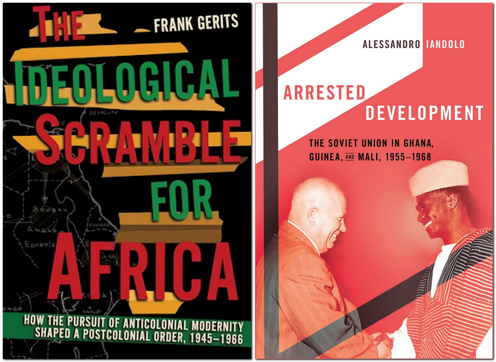

1The two books under review present, at times, complementary and, at times, contradictory narratives. The geographical and temporal contexts, along with the theme of modernity, serve as their interfaces. However, what particularly connects them is the departure from Cold War centrism in regional and global history after 1945. In this regard, Frank Gerits presents a compelling argument that the primary ideological fractures in Africa between 1945 and 1966 were characterised not by the East-West divide between the two superpowers but by a significant North-South divide and those within the postcolonial, primarily African, politics. Alessandro Iandolo’s study, while focusing on the relations between the USSR and Ghana, Guinea, and Mali on a smaller scale, also departs from the conventional Cold War narrative. He emphasises that the ambitious Soviet initiative to jumpstart West Africa’s modernisation was not driven by Realpolitik or the pursuit of strategic advantages on the continent. Instead, it aimed to demonstrate that the USSR could provide a non-capitalist (yet also not a communist), state-centred development model.
2Frank Gerits, an Assistant Professor in the History of International Relations at Utrecht University, tells a story of an “ideological scramble for Africa”, describing the struggle among African, US, Soviet, and European politicians to define the continent’s future. This struggle included Pan-African, capitalist, communist, and imperial visions of the postcolonial order. While the latter three have long been central to discussions about the intersections of the Cold War and decolonisation, Gerits’s treatment of Pan-Africanism as a “liberationist interventionist ideology with universalist aspirations” (p. 2) marks a significant departure from conventional narratives.
3He traces the origins of this ideology to the Haitian Revolution of 1791, during which Toussaint Louverture called for the universal application of French revolutionary principles of liberty and equality, thereby offering a fundamental critique of the European Enlightenment (p. 5). In the 1950s and 1960s, several postcolonial states – such as Ghana under Kwame Nkrumah – became central to the struggle between liberation and imperialism as they sought to achieve anticolonial modernity through state-building that respected African culture and by creating a non-racial international hierarchy. In this context, the Third World was not a physical place but an alternative ideological project. Pan-Africanism was one of its manifestations, while federations of liberation – such as that of Ghana, Guinea, and Mali – were supposed to facilitate its implementation.
4Gerits’s book is structured into eight thematic and chronological chapters. The first two address the psychological approaches to decolonisation and modernisation, paying particular attention to the crisis of the European empires and the Bandung Conference of 1955, which aimed to provide an alternative development path but ultimately failed to unite Africans and Asians. The subsequent chapters predominantly focus on the Ghanaian Pan-African development project, which sought to make postcolonial populations immune to external ideological influences; the African opposition to French nuclear tests in the Sahara; and the Congo Crisis of 1960. The final three chapters explore the main challenges to the liberationist modernisation project and its eventual collapse. Chapter 6 examines pragmatic regionalism in Africa, represented by Julius Nyerere’s Ujamaa, which competed against Nkrumah’s interventionist Pan-Africanism. Chapter 7 discusses white settler projects for postcolonial Africa, focusing on Rhodesia. The final chapter analyses the crisis of the liberationist model, leading to the emergence of direct competition between the Cold War ideologies during the 1970s.
5The use of a multi-perspective approach that highlights the positions of African, British, French, Belgian, Portuguese, Soviet, and American actors, along with the reliance on extensive archival materials from Ghana, Senegal, Zambia, and other African countries, makes this study a significant contribution to contemporary history. Gerits adeptly navigates the complexities of diplomatic and intellectual history without losing sight of the ideological struggles and different approaches to development in the Global South and to aid in the Global North. Particularly compelling is his examination of the tension between psychological decolonisation and modernisation, as opposed to more technocratic, socioeconomic approaches, along with his discussion of African socialisms in their various and competing forms. The multi-perspective approach, however, occasionally makes the narrative too dense, which can hinder readability. In many instances, the names of individual politicians, particularly those from Europe and the USA, are mentioned only once and could be omitted or moved to the endnotes. The book also erroneously positions the origins of the Soviet discourse of the “non-capitalist path of development” in the 1950s, whereas it was, in fact, initially devised in the 1920s and 1930s.
6Alessandro Iandolo, a Soviet/Post-Soviet History lecturer at University College London, examines how development as a holistic phenomenon was conceptualised by (predominantly) Soviet actors and implemented in Ghana, Guinea, and Mali in the 1950s and 1950s. The book argues that the Soviet goal was to construct a new type of state-centred development (p. 2). While this state-centred approach was similar to state socialism, the inclusion of significant market elements, the continued trade with countries outside the USSR, and the absence of political dependency on Moscow rendered it non-communist. The project stemmed from a confluence of factors. Firstly, the rapid post-war reconstruction of the USSR and its notable economic development – evidenced by the launch of an artificial satellite and especially the completion of large-scale infrastructure projects like dams (p. 30) – made it an appealing model for politicians in postcolonial contexts seeking swift modernisation. Secondly, the conflict-ridden nature of decolonisation, the neo-colonial forms of dependency, and the USA’s reluctance to provide aid to Ghana, Guinea, and Mali led their leaders – Nkrumah, Ahmed Sékou Touré, and Modibo Keïta – to pursue close cooperation with the USSR. Finally, the confidence of the Soviet elites under Nikita Sergeevich Khrushchev in their capacity to provide the postcolonial world with a model of modernisation more effective than the capitalist ones, combined with their willingness to offer substantial economic aid without political conditions, made this experiment feasible.
7Iandolo demonstrates that although the USSR’s relations with the three African states exhibited colonial features – such as the emphasis on the former’s civilising mission and the export of raw materials from the latter – the Soviet side did not gain much from them in the material sense. What mattered were the immaterial gains of potentially showcasing a viable model of development that served as an alternative to capitalism and could be at least as effective in generating economic growth (p. 143). This model was not communist, as it did not prioritise heavy industry. At the same time, it favoured state-centred over market-driven development and collectivism over individual profit-seeking. In a way, it represented a vernacular African (or African Socialist) development model (pp. 226–7, 229–30).
8The study is organised into six chronological and thematic chapters. Chapters 1 and 2 address the historical context of the experiment, focusing on the rapid development of the Soviet economy in the first decade after World War II, decolonisation, and the Cold War. Chapters 3 and 4 trace the sometimes challenging but ultimately successful Soviet attempts to establish direct relations with Ghana, Guinea, and Mali, leading to the formulation and implementation of concrete development projects. Finally, Chapters 5 and 6 demonstrate that while the model quickly faced severe challenges that strained relations between the Soviet and West African leaderships, it was ultimately its abandonment by Moscow by 1964 that brought the project to an end, resulting in the collapse of the economies of Ghana, Guinea, and Mali. In this context, the coups against Khrushchev in 1964, Nkrumah in 1966, and Keïta in 1968 served as an epilogue to what had become an otherwise completed story.
9Iandolo highlights how the Soviet project was grounded in expertise and employs a differentiated approach to studying Soviet agencies – from government bodies to research institutions – that often had varying agendas (pp. 32–33, 36). The study relies on a selection of primary sources from multiple national archives. Iandolo’s text is highly readable. It provides a clear economic and political history of how the Soviet etatist development model for West Africa resembled state capitalism, including the import substitution industrialisation implemented elsewhere; how barter trade and the continued integration of the three states into the global market challenged it; and how poorly conceived projects and inefficient resource use undermined its effectiveness. However, the narrative is sometimes too general and would benefit from more detail regarding how the divergent positions among the various agencies and actors mattered. Besides, the text would benefit from discussing specific projects (such as the Conakry stadium) and detailing their planning and construction. More insights into the interactions and experiences of the Soviet and West African actors would also be welcome. Similar to Gerits’s book, Iandolo’s study does not address the developments in Tuva and Mongolia, where non-capitalist development was proclaimed and institutionalised during the 1920s and 1930s (pp. 43, 53).
10Despite some minor criticisms, both books are essential for scholars and students of global, African, and Soviet history. Their differing responses to the questions regarding how and when the Cold War began in Africa (for Iandolo, it commenced with the Congo Crisis of 1960), as well as their varying treatments of the African actors, especially Ghana, illustrate that the process of writing an inclusionary and multipolar history of the second half of the twentieth century is still in its early stages. Overall, Gerits’s broader argument that the twentieth-century international system should be understood as the unintended outcome of a multitude of ideological struggles rather than the result of a deliberate attempt at world-making or a bipolar confrontation is particularly compelling. As Gerits notes, one legacy of the Enlightenment – the struggle between Western capitalist liberty and Eastern communist equality – ended in 1989. However, its other legacy – the struggle between Northern imperial technocracy and Southern liberationist integrity – continues. In this respect, liberationist history with slavery as its starting point and economic inequality as a persistent feature continues to shape today’s postcolonial world (pp. 9–10).